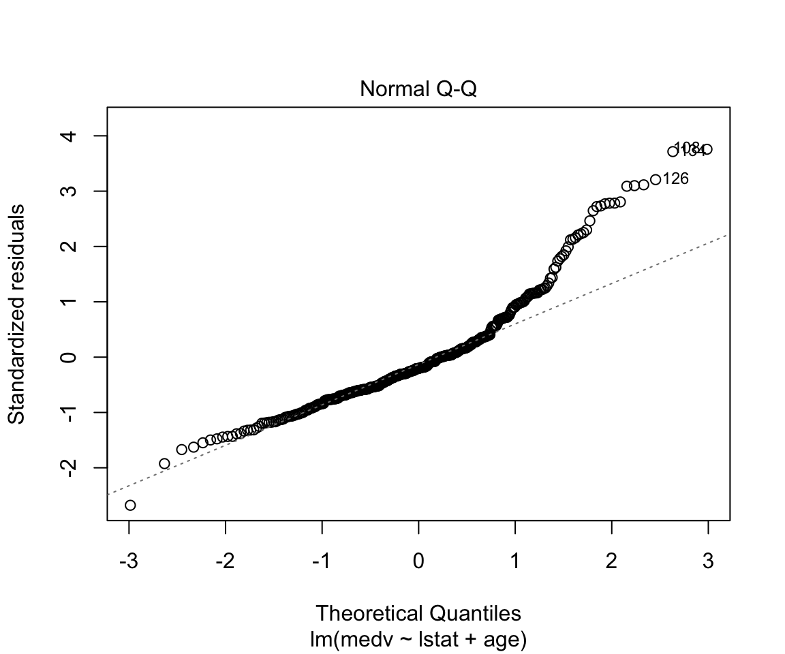
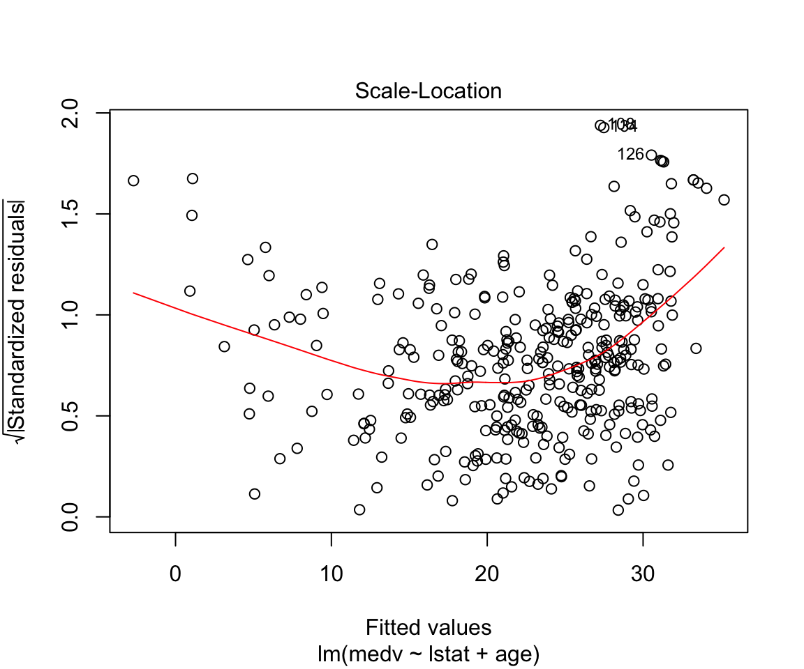
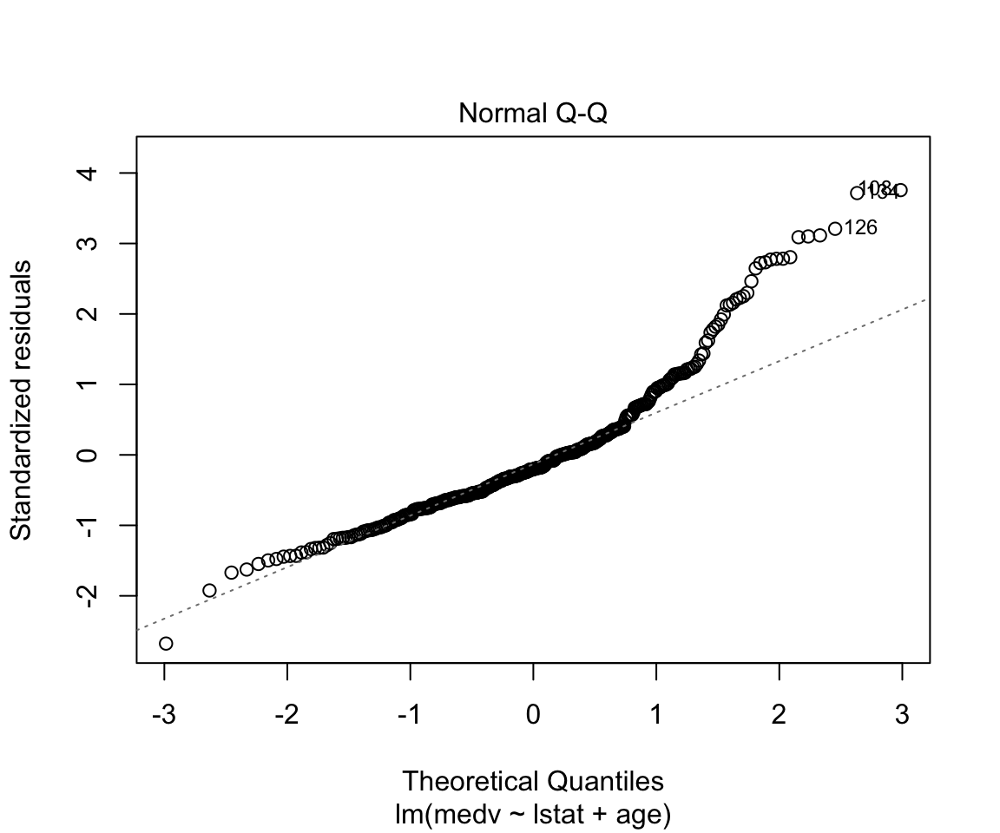
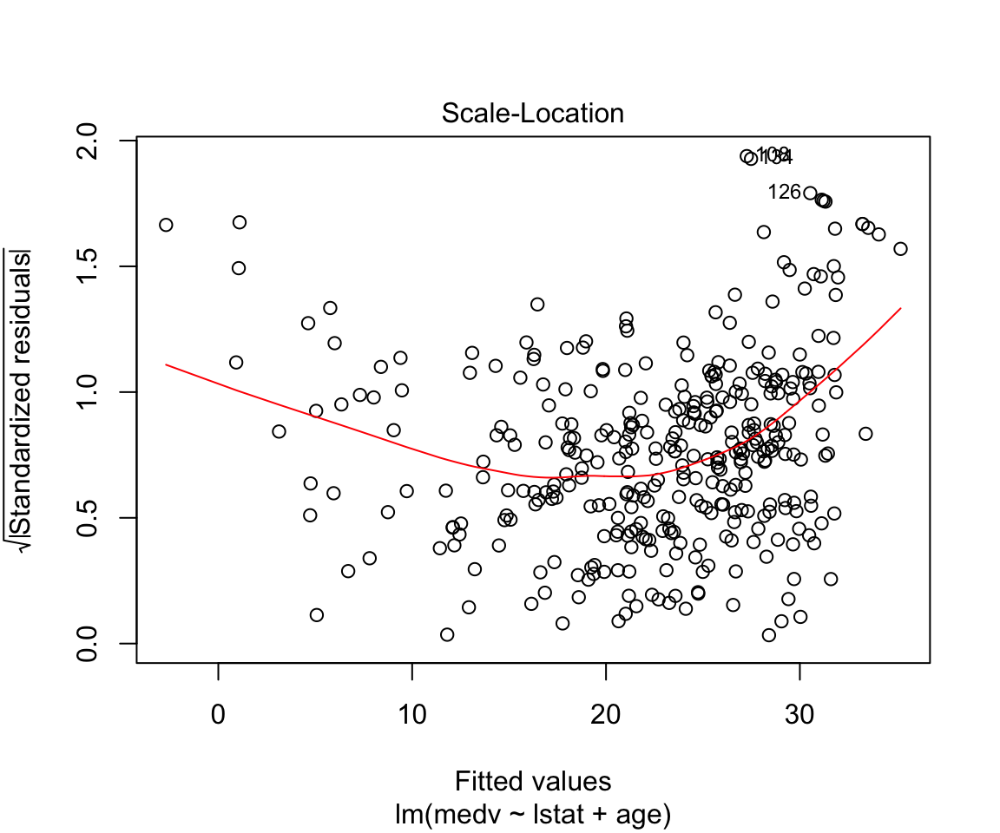

STA314F19
Michal Malyska
Preliminaries and R setup
R Setup
If you need help setting up R and Rstudio, I host a guide on my resources page
Loading Data
You can find a fully commented guide on how to load in tabular data using the faster, tidyverse function read_csv() here
Tutorial 1
Tutorial 2
Tutorial 3
Lab
data_orig <- MASS::Boston
df <- as_tibble(data_orig)
df_train <- df %>% sample_n(size = length(df$chas) * 0.7)
df_test <- setdiff(df, df_train)Let’s start by showing off what bad practice is and fit a linear model without doing any kind of previous work:
model1 <- lm(medv ~ lstat, data = df_train)
summary(model1)##
## Call:
## lm(formula = medv ~ lstat, data = df_train)
##
## Residuals:
## Min 1Q Median 3Q Max
## -15.075 -3.832 -1.169 1.791 24.633
##
## Coefficients:
## Estimate Std. Error t value Pr(>|t|)
## (Intercept) 34.65556 0.67277 51.51 <0.0000000000000002 ***
## lstat -0.97468 0.04672 -20.86 <0.0000000000000002 ***
## ---
## Signif. codes: 0 '***' 0.001 '**' 0.01 '*' 0.05 '.' 0.1 ' ' 1
##
## Residual standard error: 5.991 on 352 degrees of freedom
## Multiple R-squared: 0.5528, Adjusted R-squared: 0.5516
## F-statistic: 435.2 on 1 and 352 DF, p-value: < 0.00000000000000022plot(model1)


Assumptions are not satisfied!
ggplot(data = df, aes(x = medv, y = ..density..)) +
geom_density() +
geom_histogram(bins = 75, alpha = 0.3, fill = "red") +
theme_minimal()
ggplot(data = df, aes(sample = medv)) +
geom_qq() +
geom_qq_line() +
theme_minimal()
ggplot(data = df, aes(y = medv, x = lstat)) +
geom_point() +
geom_smooth(method = "lm", color = "red") +
geom_smooth(method = "gam", formula = y ~ s(x, bs = "cs"), color = "green") +
geom_smooth(method = "lm", formula = y ~ x + I(x^2), color = "blue") +
theme_minimal()
How to make predictions:
df_test$predictions <- predict(model1, newdata = df_test)How to add multiple variables as predictors:
model2 <- lm(data = df_train, formula = medv ~ lstat + age)
summary(model2)##
## Call:
## lm(formula = medv ~ lstat + age, data = df_train)
##
## Residuals:
## Min 1Q Median 3Q Max
## -15.8984 -3.7556 -0.9913 1.6495 23.3215
##
## Coefficients:
## Estimate Std. Error t value Pr(>|t|)
## (Intercept) 33.50300 0.83611 40.070 <0.0000000000000002 ***
## lstat -1.05929 0.05928 -17.869 <0.0000000000000002 ***
## age 0.03271 0.01424 2.297 0.0222 *
## ---
## Signif. codes: 0 '***' 0.001 '**' 0.01 '*' 0.05 '.' 0.1 ' ' 1
##
## Residual standard error: 5.955 on 351 degrees of freedom
## Multiple R-squared: 0.5595, Adjusted R-squared: 0.5569
## F-statistic: 222.9 on 2 and 351 DF, p-value: < 0.00000000000000022plot(model2) 

How to add everything (and subtract some) variables:
model3 <- lm(data = df_train, formula = medv ~ . -age -indus)
summary(model3)##
## Call:
## lm(formula = medv ~ . - age - indus, data = df_train)
##
## Residuals:
## Min 1Q Median 3Q Max
## -14.2248 -2.7288 -0.5909 1.5077 24.2271
##
## Coefficients:
## Estimate Std. Error t value Pr(>|t|)
## (Intercept) 37.621196 5.765705 6.525 0.00000000024519 ***
## crim -0.133861 0.034111 -3.924 0.000105 ***
## zn 0.063159 0.015106 4.181 0.00003689667559 ***
## chas 1.490504 1.041630 1.431 0.153362
## nox -14.115336 4.258077 -3.315 0.001015 **
## rm 3.120400 0.457409 6.822 0.00000000004091 ***
## dis -1.580656 0.214886 -7.356 0.00000000000142 ***
## rad 0.347996 0.075384 4.616 0.00000553448569 ***
## tax -0.013765 0.004068 -3.384 0.000798 ***
## ptratio -0.811979 0.151737 -5.351 0.00000016037786 ***
## black 0.010407 0.003146 3.308 0.001041 **
## lstat -0.613526 0.057880 -10.600 < 0.0000000000000002 ***
## ---
## Signif. codes: 0 '***' 0.001 '**' 0.01 '*' 0.05 '.' 0.1 ' ' 1
##
## Residual standard error: 4.617 on 342 degrees of freedom
## Multiple R-squared: 0.742, Adjusted R-squared: 0.7337
## F-statistic: 89.39 on 11 and 342 DF, p-value: < 0.00000000000000022How to add interactions:
model4 <- lm(data = df_train, formula = medv ~ . -age -indus + lstat:ptratio )
summary(model4)##
## Call:
## lm(formula = medv ~ . - age - indus + lstat:ptratio, data = df_train)
##
## Residuals:
## Min 1Q Median 3Q Max
## -14.612 -2.659 -0.564 1.463 23.918
##
## Coefficients:
## Estimate Std. Error t value Pr(>|t|)
## (Intercept) 33.596965 7.147797 4.700 0.0000037753778 ***
## crim -0.132261 0.034157 -3.872 0.000129 ***
## zn 0.066766 0.015575 4.287 0.0000236253118 ***
## chas 1.409054 1.045272 1.348 0.178545
## nox -15.791339 4.607634 -3.427 0.000684 ***
## rm 3.229665 0.471626 6.848 0.0000000000350 ***
## dis -1.646127 0.225632 -7.296 0.0000000000021 ***
## rad 0.351618 0.075490 4.658 0.0000045869277 ***
## tax -0.013298 0.004098 -3.245 0.001291 **
## ptratio -0.586105 0.281476 -2.082 0.038064 *
## black 0.010400 0.003147 3.305 0.001051 **
## lstat -0.240685 0.395571 -0.608 0.543295
## ptratio:lstat -0.019417 0.020379 -0.953 0.341367
## ---
## Signif. codes: 0 '***' 0.001 '**' 0.01 '*' 0.05 '.' 0.1 ' ' 1
##
## Residual standard error: 4.618 on 341 degrees of freedom
## Multiple R-squared: 0.7426, Adjusted R-squared: 0.7336
## F-statistic: 82 on 12 and 341 DF, p-value: < 0.00000000000000022How to write high level interactions:
model5 <- lm(data = df_train, formula = medv ~ lstat*ptratio*black)
summary(model5)##
## Call:
## lm(formula = medv ~ lstat * ptratio * black, data = df_train)
##
## Residuals:
## Min 1Q Median 3Q Max
## -11.0697 -3.3657 -0.7498 1.6039 27.5138
##
## Coefficients:
## Estimate Std. Error t value Pr(>|t|)
## (Intercept) -78.2016791 53.7080632 -1.456 0.14629
## lstat 4.6647939 2.8825315 1.618 0.10651
## ptratio 4.9701518 2.7146865 1.831 0.06798 .
## black 0.3752834 0.1407734 2.666 0.00804 **
## lstat:ptratio -0.2546636 0.1455147 -1.750 0.08099 .
## lstat:black -0.0173050 0.0076170 -2.272 0.02371 *
## ptratio:black -0.0176022 0.0071291 -2.469 0.01403 *
## lstat:ptratio:black 0.0008232 0.0003852 2.137 0.03330 *
## ---
## Signif. codes: 0 '***' 0.001 '**' 0.01 '*' 0.05 '.' 0.1 ' ' 1
##
## Residual standard error: 5.483 on 346 degrees of freedom
## Multiple R-squared: 0.6318, Adjusted R-squared: 0.6244
## F-statistic: 84.82 on 7 and 346 DF, p-value: < 0.00000000000000022This is what our data looks like:
ggplot(data = df_train, aes(x = lstat, y = medv)) +
geom_point() +
theme_minimal()
How to add a funciton of a variable as a predictor and how to make simple visualizations without adding predictions:
model6 <- lm(data = df_train, formula = medv ~ lstat + I(lstat^2))
summary(model6)##
## Call:
## lm(formula = medv ~ lstat + I(lstat^2), data = df_train)
##
## Residuals:
## Min 1Q Median 3Q Max
## -15.1918 -3.6097 -0.4669 2.1400 25.4309
##
## Coefficients:
## Estimate Std. Error t value Pr(>|t|)
## (Intercept) 42.24332 1.09102 38.719 < 0.0000000000000002 ***
## lstat -2.24844 0.15723 -14.300 < 0.0000000000000002 ***
## I(lstat^2) 0.04133 0.00491 8.417 0.000000000000000994 ***
## ---
## Signif. codes: 0 '***' 0.001 '**' 0.01 '*' 0.05 '.' 0.1 ' ' 1
##
## Residual standard error: 5.473 on 351 degrees of freedom
## Multiple R-squared: 0.6279, Adjusted R-squared: 0.6258
## F-statistic: 296.2 on 2 and 351 DF, p-value: < 0.00000000000000022ggplot(data = df_train, aes(x = lstat, y = medv)) +
geom_point() +
geom_smooth(method = "lm", formula = y ~ x + I(x^2)) +
theme_minimal()
How to fit higher degree polynomials and visualize them:
model7 <- lm(data = df_train, formula = medv ~ poly(lstat, degree = 5))
summary(model7)##
## Call:
## lm(formula = medv ~ poly(lstat, degree = 5), data = df_train)
##
## Residuals:
## Min 1Q Median 3Q Max
## -13.4837 -3.2326 -0.7131 2.0812 26.6545
##
## Coefficients:
## Estimate Std. Error t value Pr(>|t|)
## (Intercept) 22.2924 0.2828 78.827 < 0.0000000000000002
## poly(lstat, degree = 5)1 -124.9843 5.3209 -23.489 < 0.0000000000000002
## poly(lstat, degree = 5)2 46.0650 5.3209 8.657 < 0.0000000000000002
## poly(lstat, degree = 5)3 -15.2803 5.3209 -2.872 0.00433
## poly(lstat, degree = 5)4 16.9797 5.3209 3.191 0.00155
## poly(lstat, degree = 5)5 -11.7766 5.3209 -2.213 0.02753
##
## (Intercept) ***
## poly(lstat, degree = 5)1 ***
## poly(lstat, degree = 5)2 ***
## poly(lstat, degree = 5)3 **
## poly(lstat, degree = 5)4 **
## poly(lstat, degree = 5)5 *
## ---
## Signif. codes: 0 '***' 0.001 '**' 0.01 '*' 0.05 '.' 0.1 ' ' 1
##
## Residual standard error: 5.321 on 348 degrees of freedom
## Multiple R-squared: 0.6513, Adjusted R-squared: 0.6463
## F-statistic: 130 on 5 and 348 DF, p-value: < 0.00000000000000022ggplot(data = df_train, aes(x = lstat, y = medv)) +
geom_point() +
geom_smooth(method = "lm", formula = y ~ poly(x, degree = 5)) +
theme_minimal()
How to change plotting settings in base R (For tidyverse you should use gridExtra)
par(mfrow = c(2,2))
plot(model6)
Fitting character variables:
df2 <- ISLR::Carseats
df2_train <- sample_n(df2, size = length(df2$Sales) * 0.7)
df2_test <- setdiff(df2, df2_train)
glimpse(df2_train)## Observations: 280
## Variables: 11
## $ Sales <dbl> 7.99, 6.71, 8.39, 15.63, 7.32, 10.48, 5.94, 5.90, 8.…
## $ CompPrice <dbl> 127, 106, 115, 122, 105, 138, 100, 138, 120, 103, 13…
## $ Income <dbl> 59, 73, 97, 36, 32, 72, 79, 92, 51, 81, 24, 96, 40, …
## $ Advertising <dbl> 0, 0, 5, 5, 0, 0, 7, 0, 0, 3, 0, 10, 17, 12, 1, 0, 1…
## $ Population <dbl> 339, 216, 134, 369, 358, 148, 284, 13, 93, 491, 358,…
## $ Price <dbl> 99, 93, 84, 72, 107, 94, 95, 120, 86, 54, 185, 118, …
## $ ShelveLoc <fct> Medium, Medium, Bad, Good, Medium, Medium, Bad, Bad,…
## $ Age <dbl> 65, 60, 55, 35, 26, 27, 50, 61, 46, 66, 79, 69, 54, …
## $ Education <dbl> 12, 13, 11, 10, 13, 17, 12, 12, 17, 13, 15, 11, 17, …
## $ Urban <fct> Yes, Yes, Yes, Yes, No, Yes, Yes, Yes, No, Yes, No, …
## $ US <fct> No, No, Yes, Yes, No, Yes, Yes, No, No, No, No, Yes,…# Fit a model with a catergorical variable
model7 <- lm(data = df2_train, formula = Sales ~ ShelveLoc)
summary(model7)##
## Call:
## lm(formula = Sales ~ ShelveLoc, data = df2_train)
##
## Residuals:
## Min 1Q Median 3Q Max
## -7.3567 -1.6317 -0.0467 1.6158 6.2994
##
## Coefficients:
## Estimate Std. Error t value Pr(>|t|)
## (Intercept) 5.3706 0.2831 18.970 < 0.0000000000000002 ***
## ShelveLocGood 4.7947 0.4285 11.190 < 0.0000000000000002 ***
## ShelveLocMedium 1.9861 0.3422 5.804 0.0000000177 ***
## ---
## Signif. codes: 0 '***' 0.001 '**' 0.01 '*' 0.05 '.' 0.1 ' ' 1
##
## Residual standard error: 2.385 on 277 degrees of freedom
## Multiple R-squared: 0.3115, Adjusted R-squared: 0.3066
## F-statistic: 62.67 on 2 and 277 DF, p-value: < 0.00000000000000022# What are ShelveLocGood and ShelveLocMedium
contrasts(df2$ShelveLoc)## Good Medium
## Bad 0 0
## Good 1 0
## Medium 0 1Load_packages <- function(){
library(tidyverse)
library(MASS)
library(ISLR)
}Load_packages()If you would like to see some more advanced uses of the techniques; I covered the same lab and a chapter of the R for data science textbook that deals with fitting multiple models to the same dataset using tidyverse functions.